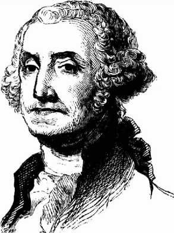

История в бокалах . Напитки , которые создали Америку.


Из дешевой мелассы французских островов
Новая Англия сделала ром, который был
главным источником ее богатства,
ром, на который она покупала рабов для
Мэриленда и Каролины и оплачивала
счета английским торговцам.
Любимый напиток Америки
Предпринятые в конце XVI века попытки Англии создать колонии в Северной Америке были основаны на ошибочных расчетах. Считалось, что климат части Североамериканского континента, на который претендовала Англия, – земли между 34 и 38 градусом северной широты, названной Виргинией в честь королевы Елизаветы I (Королевы-девственницы), – будет таким же, как в средиземноморском регионе Европы, расположенном в тех же широтах. Англичане надеялись, что американские колонии смогут поставлять средиземноморские маслины и фрукты, уменьшив тем самым зависимость Англии от импорта из континентальной Европы.
В одном проспекте утверждалось, что колонии станут поставщиками «вина, фруктов и соли как из Франции и Испании… шелка как из Персии и Италии», а также избавят от необходимости импортировать древесину из Скандинавии. Колонисты надеялись найти редкие металлы, минералы и драгоценные камни, что сулило большую прибыль.
Реальность оказалась иной. В более суровом, чем предполагалось, североамериканском климате ни средиземноморские культуры, ни сахарный тростник не росли. Также не было обнаружено никаких металлов, минералов или драгоценностей, потерпели неудачу и эксперименты с шелком. В течение десятилетия после создания в 1607 году первой постоянной английской колонии поселенцам пришлось бороться с болезнями, нехваткой продовольствия, а также с индейцами, чьи земли они присвоили.
В таких условиях ключевой задачей стала организация надежного снабжения алкоголем. Когда в 1607 году два из трех кораблей доставили первых поселенцев в Виргинию и отправились обратно в Англию, Томас Скулли, один из жителей новой колонии Джеймстаун, жаловался, что там «не было ни таверны, ни пивной, ни иного места для расслабления». Первый корабль, прибывший той же зимой, привез немного пива – большую часть груза выпил по дороге экипаж. Последующие поставки мало что изменили – алкоголь был некачественным либо изначально, либо потому, что портился по дороге.
В 1613 году испанский наблюдатель сообщил, что 300 колонистов не имеют ничего, кроме воды для питья, а это противоречит характеру англичан, из-за чего они все хотят вернуться и сделали бы это, если бы могли. Мало что изменилось и к 1620 году. Население колонии выросло до 3 тысяч человек, но, по воспоминаниям очевидца, «самое большое желание, которое они выражают, – это хороший напиток», другими словами, нечто более крепкое, чем вода.
В том же году дефицит пива определил выбор места для второй английской колонии, созданной пуританами-кальвинистами, вошедшими в историю Америки как «отцы-пилигримы». Плохая погода не позволила кораблю «Мейфлауэр» бросить якорь на реке Гудзон, поэтому капитан высадил своих пассажиров севернее, у мыса Код (англ. Cape Cod – «мыс трески». – Прим, перев.). Уильям Брэдфорд, который в 1621 году стал губернатором колонии, записал в своем дневнике: «У нас не было времени для дальнейшего поиска, наши запасы иссякли, особенно туго у нас было с пивом». Матросы стремились обеспечить себя пивом на обратный путь, поскольку ошибочно полагали, что в морском путешествии оно могло защитить их от цинги, и оставили поселенцам лишь небольшой запас. Подобно колонистам Виргинии, им приходилось довольствоваться водой.
«Считается, что в мире не может быть воды лучше хорошего пива, – заметил колонист Уильям Вуд, – но любой человек между хорошей водой и плохим пивом выберет все-таки воду». Поселенцы третьей английской колонии в Массачусетсе учли ошибку своих предшественников. В 1628 году судно «Арабелла» с лидером колонистов-пуритан Джоном Уинтропом на борту привезло 42 тонны, или около 10 тысяч галлонов пива.
Из-за сурового климата европейские зерновые культуры, подходящие для производства пива, было очень трудно культивировать. И вместо того чтобы полагаться на импортное пиво из Англии, поселенцы пытались изготовить свое собственное из еловых веток, кленового сока, тыквы и яблок. Песня того времени свидетельствует о находчивости этих пивоваров:
Себе питье подарим,
любой напиток сварим
из тыквы части,
из пастернака для сласти,
из ореха на счастье!
Так же как испанские и португальские колонисты на юге, североамериканские переселенцы пробовали прививать европейские виноградные лозы, но их усилия не увенчались успехом из-за неподходящего климата и недостатка опыта. Попытка делать вино из местного винограда тоже не удалась – результат был отвратительным. В конце концов было решено сосредоточиться на коммерческом выращивании табака и импортировать из Европы вместе с вином и бренди солодовый ячмень для производства пива.
Все изменилось во второй половине XVII века, когда любимым напитком североамериканских колонистов стал ром. Сделанный из дешевой мелассы, а не из дорогого вина, он был намного дешевле и в то же время крепче бренди, и его не нужно было перевозить через Атлантику. Это облегчало трудности новой жизни, служило «жидкой формой центрального отопления» в суровые зимы и снижало зависимость колонистов от импорта из Европы. Бедные употребляли ром в чистом виде, а состоятельные колонисты – в виде пунша, смеси алкоголя, сахара, воды, лимонного сока и специй. (Пунш, как и более грубый морской напиток грог, были предками современного коктейля.)
Колонисты употребляли ром по любому поводу: составляя и подписывая контракты, продавая фермы, покупая товары и заказывая одежду у портного. Любой, кто отказался от контракта до его подписания, должен был заплатить половину барреля пива или галлон рома в качестве компенсации. Однако не все приветствовали появление этого дешевого и мощного напитка. «Это несчастье, что… так распространился… напиток, называемый ромом, – посетовал бостонский проповедник Инкриз Мэзер в 1686 году, – бедные напиваются за полпенса допьяна».
С конца XVII века ром стал основой процветающей промышленности, так как торговцы Новой Англии, прежде всего Салема, Ньюпорта, Медфорда и Бостона, начали импортировать сырую патоку, а не ром и сами занялись перегонкой. Ром получался хуже того, что привозили из Вест-Индии, но стоил копейки, что было важно для большинства потребителей. Он стал самым прибыльным продуктом, производимым в Новой Англии. По словам одного из современных наблюдателей, «количество алкоголя, который они перегоняют в Бостоне из импортной мелассы, столь же удивительно, как и его дешевизна (галлон за два шиллинга). Но он более известен количеством и дешевизной, нежели качеством». Ром был настолько дешев, что рабочему часто хватало однодневного заработка, чтобы пьянствовать неделю.
От рома до революции
Виноделы Новой Англии нашли еще один рынок сбыта среди работорговцев, для которых ром был предпочтительной формой валюты при покупке рабов на западном побережье Африки. В Ньюпорте даже освоили производство более крепкого рома специально для использования в качестве «рабской валюты». Такая процветающая торговля в колониях не очень устраивала плантаторов на британских сахарных островах и их покровителей в Лондоне, однако производители рома Новой Англии начали импортировать мелассу с французских островов.
Поскольку Франция запретила производство рома в своих колониях, чтобы защитить свою коньячную промышленность, французские производители сахара были счастливы продавать мелассу на заводы Новой Англии даже по низкой цене. В то же время британские производители сахара проиграли французам схватку за европейский рынок. Использование французской мелассы в Новой Англии только усугубило эту травму. Британские производители призвали к вмешательству правительство, ив 1733 году в Лондоне был принят Закон о мелассе.
Закон устанавливал запретительный акциз в шесть пенсов за галлон мелассы, ввозимой в североамериканские колонии из иностранных (иначе говоря, французских) колоний. Идея заключалась в том, чтобы побудить производителей рома в Новой Англии покупать мелассу на британских островах. Но обеспечить потребности промышленности Новой Англии они не могли, да и качеством (как считали в колониях) французская патока превосходила британскую. Строгое соблюдение закона привело бы к сокращению производства, росту цен и стало бы концом экономического процветания Новой Англии, ударом по основной доходной части экономики, поскольку 80 процентов экспорта приходилось на ром. Это также лишило бы североамериканских колонистов любимого напитка. К этому времени потребление рома в колониях составляло почти четыре американских галлона в год на каждого мужчину, женщину или ребенка.
Неудивительно, что производители рома проигнорировали закон. Они покупали контрабандную мелассу с французских островов и при необходимости подкупали должностных лиц, которые должны были собирать налог. Таможенники назначались в Англии, и большинство из них там и оставались, нанимая помощников для выполнения своих обязанностей за границей. Соответственно, эти местные помощники больше сочувствовали своим коллегам-колонистам, чем хозяевам в Лондоне. В течение нескольких лет после принятия закона подавляющая часть рома – по некоторым оценкам, более пяти шестых – все еще производилась из французской патоки. В то же время количество заводов, производящих ром в Бостоне, выросло с восьми в 1738 году до 63 в 1750 году. Ром продолжал течь рекой, сохраняя свои позиции во всех сферах колониальной жизни. Он играл важную роль и в избирательных кампаниях. Например, когда Джордж Вашингтон баллотировался в Законодательное собрание Виргинии в 1758 году, его предвыборный штаб раздал 28 галлонов рома, 50 галлонов пунша, 34 галлона вина, 46 галлонов пива и 2 галлона сидра. И это в округе с 391 избирателем!
Закон о мелассе был колоссальной ошибкой британского правительства. Сделав контрабанду социально приемлемой и оправданной, он подорвал уважение колонистов к британскому законодательству в целом и создал серьезный прецедент. Отныне они считали, что имеют право игнорировать и другие законы, облагающие, как им казалось, необоснованно высокими налогами товары, ввозимые в колонии и вывозимые из них. В результате повсеместное нарушение Закона о мелассе стало первым шагом на пути к независимости Соединенных Штатов.
Следующим шагом стало принятие Закона о сахаре в 1764 году, в конце вооруженного конфликта британских войск и американских колонистов с французами. (Этот конфликт был американской составляющей Семилетней войны, в которой приняли участие все великие европейские державы того времени.) Победа обеспечила британское господство на Североамериканском континенте, но оставила Великобританию с огромным государственным долгом. Признавая, что война велась в значительной степени на благо американских колонистов, которые зачастую продолжали торговать с Францией и в это время, британское правительство пришло к выводу, что они должны выполнять этот закон. Шесть пенсов на галлон по Закону о мелассе сократили вдвое, но было принято решение о повышении собираемости налога. Таможенникам больше не разрешалось оставаться в Великобритании. Колониальные губернаторы должны были строго соблюдать закон и ловить контрабандистов, а Королевскому флоту предоставили возможность взимать пошлины в американских водах.
Новый закон с его явной целью – повысить доходы, а не просто регулировать торговлю, в Америке был очень непопулярен. Дистиллеры Новой Англии возглавили оппозицию и организовали бойкот импорта из Великобритании. Многие американцы, а не только те, кто пострадал от нового закона, считали несправедливым, что им придется платить налоги в далекий заморский парламент, где у них нет даже представительства. Популярным стал лозунг «Нет налогов без представительства». Сторонники независимости североамериканских колоний, известные как «Сыны Свободы», начали готовить общественное мнение к разрыву с Британией. Участники кампании часто встречались в винокурнях и тавернах. Революционный лидер Джон Адамс отметил в своем дневнике, что он присутствовал на собрании «Сынов свободы» в 1766 году в «бухгалтерии винокурни Chase and Speakman’s», где участники курили трубки, пили пунш, ели сыр и пирожные.
За Законом о сахаре последовала серия других непопулярных законов, в том числе Stamp Act 1765 года (Акт о гербовом сборе, или Штемпельный акт), Townshend Acts 1767 года (Законы Тауншенда) и Tea Act 1773 года (Закон о чае). Результатом стал конфликт, получивший название «Бостонское чаепитие», когда груз чая с трех кораблей, прибывших в бостонскую гавань из Англии, был уничтожен в знак протеста против новых налоговых правил. Но, несмотря на то что чай стал символом начала американской революции, именно ром играл важнейшую роль в ходе событий, которые привели к Войне за независимость в 1775 году. Например, накануне начала военных действий Пол Ревир отправился из Бостона в Лексингтон, чтобы предупредить Джона Хэнкока и Сэмюэла Адамса о приближении британских войск. По дороге он остановился в таверне Медфорда, принадлежавшей Исааку Холу, капитану местной милиции, чтобы пропустить стаканчик ром-тодди (смесь рома, сахара и воды, которую нагревали, опуская в емкость раскаленную кочергу).
Как только начались боевые действия, ром стал главным напитком американских солдат и оставался им в течение всех шести лет военных действий. Генерал Генри Нокс, написавший Джорджу Вашингтону в 1780 году записку о закупках материалов из северных штатов, подчеркнул особое значение рома. «Помимо говядины и свинины, хлеба и муки ром исключительно важная статья снабжения, – писал он. – Никакие усилия не могут быть лишними, чтобы обеспечить его нужное количество». Налогообложение мелассы, с которого началось отчуждение американских колоний от Британии, сделало ром одним из символов революции. Спустя много лет после капитуляции британской армии в 1781 году и создания Соединенных Штатов Америки Джон Адамс, к тому времени один из отцов-основателей, написал другу: «Я не знаю, почему мы должны краснеть, признавая, что меласса была главным ингредиентом независимости США. Многие великие события происходили по менее значимым причинам».
Пионерский дух
Ром был напитком колониального периода и американской революции, но многие из граждан молодой нации вскоре изменили ему с другим дистиллированным напитком. Поселенцы, которые двинулись на запад, подальше от Восточного побережья, освоили производство виски. Помогло их шотландско-ирландское происхождение, а значит, опыт перегонки зерна. Ячмень, пшеницу, рожь и кукурузу было трудно выращивать на побережье (отсюда неудачи ранних колонистов с производством пива), а внутри страны этой проблемы не существовало. Мелассу привозили по морю, соответственно производство рома процветало в прибрежных городах. Транспортировка ее в глубь страны была дорогостоящим занятием, да и поставки из-за войны прекратились. А виски можно было делать практически в любом месте. Этот напиток не зависел от импортных ингредиентов, поставки которых можно блокировать или обложить налогом.
К 1791 году в Западной Пенсильвании было более 5 тысяч перегонных кубов, по одному на каждые шесть человек. Виски была отведена роль, которую ранее играл ром. Его использовали как сельскую валюту, меняли на такие предметы первой необходимости, как соль, сахар, железо, порох и патроны. Им расплачивались с земледельцами и священнослужителями, присяжными заседателями и избирателями, скрепляли подписание юридических документов. Этот напиток стал концентрированной формой богатства – нагруженная лошадь могла везти четыре бушеля зерна, или 24 после того, как зерно перегоняли в виски.
Поэтому, когда секретарь Министерства финансов США Александр Гамильтон начал поиск источника финансов для погашения огромного государственного долга, возникшего во время Войны за независимость, введение федерального акцизного сбора на производство дистиллированных напитков казалось «благоприятным для сельского хозяйства, экономики, нравственности и здоровья общества». В марте 1791 года был принят закон: с 1 июля производители алкоголя могут выплачивать ежегодный сбор или акциз в размере не менее 7 центов на каждый галлон в зависимости от его крепости. Это решение вызвало незамедлительный протест, особенно в поселениях вдоль западной границы, поскольку акциз начинал действовать не в момент продажи, а как только напиток покидал перегонный куб. Это означало, что виски, произведенный для частного потребления или бартера, также подлежит налогообложению. Кроме того, многие из переселенцев приехали в Америку, чтобы уйти от сборщиков налогов и правительственного вмешательства. Они жаловались, что новое федеральное правительство ничем не лучше британского, чей гнет Америка только что скинула.
Разногласия по акцизу на виски отразили глубокий разрыв в балансе сил между штатами и федеральным правительством. В целом жителей восточных территорий (Новой Англии) можно было считать более удачливыми, чем жителей южных и западных штатов. Идея о том, что федеральный закон должен иметь приоритет над законодательством штатов, объективно отвечала интересам востока. Новый закон, в котором, среди прочего, указывалось, что правонарушителей будет судить федеральный суд в Филадельфии, а не местные суды, также отвечал восточным, федералистским интересам.
Джеймс Джексон из Джорджии заявил в Палате представителей, что акциз «лишит массу людей почти единственной роскоши, которой они пользуются, дистиллированных спиртных напитков». И если не противостоять этому, что может произойти дальше? «Придет время, – предупредил Джексон, – когда рубашку нельзя будет постирать без акциза».
В результате, как только новый закон вступил в силу, многие фермеры отказались его выполнять. На сборщиков налогов нападали, их документы уничтожали, с лошадей снимали седла и разрезали на куски. Наиболее яростным было сопротивление в пограничных округах Западной Пенсильвании: Фейетт, Аллегейни, Уэстморленд и Вашингтон. Группы фермеров, выступавших против акциза, начали координировать свои действия и оказывать организованное сопротивление. Производителям, уплатившим налог, простреливали перегонные кубы. Призывы к неповиновению развешивали даже на деревьях.
Конгресс, пытаясь исправить ситуацию, в 1792 и 1794 годах внес поправки в закон, чтобы уменьшить налог на сельские винокурни, а также предоставил судам штатов право судить нарушителей. Но это не успокоило оппозицию. Гамильтон, который понял, что сама власть федерального правительства теперь поставлена на карту, отправил в Западную Пенсильванию федеральных маршалов с предписаниями, обязывающими фермеров немедленно оплатить налог.
Волна насилия поднялась в июле 1794 года после того, как фермеру Уильяму Миллеру попытались вручить такое предписание. Первый выстрел по группе маршала сделал соратник Миллера. Тогда никто не пострадал, но в течение двух дней число вооруженных противников акциза выросло до 500 человек, и с обеих сторон были жертвы. Дэвид Брэдфорд, амбициозный адвокат, взял на себя руководство «мальчиками виски» (whiskey boys) и призвал местных жителей к поддержке. Около 6 тысяч человек собрались на поле Брэддока, недалеко от Питтсбурга. Брэдфорд был избран предводителем этой импровизированной армии. В итоге повстанцы приняли резолюцию, призывающую к отделению от Соединенных Штатов и созданию нового независимого государства.
Убежденный Гамильтоном в необходимости решительных действий, президент Джордж Вашингтон призвал 13 тысяч ополченцев из Восточной Пенсильвании, Нью-Джерси, Виргинии и Мэриленда. Эти войска вместе с артиллерией, снаряжением и запасами виски были отправлены через горы в Питтсбург, чтобы продемонстрировать сепаратистам серьезность намерений федерального правительства.

Джордж Вашингтон
Однако восстание уже пошло на спад. Когда армия приблизилась, Брэдфорд бежал, и его сторонники разошлись по домам. По иронии судьбы, именно милиция, призванная для разгрома «мальчиков виски», помогла дистилляторам Западной Пенсильвании уплатить акциз. В конце похода федеральным солдатам потребовалось больше виски, и они платили наличными.
Двадцать арестованных повстанцев привезли в Филадельфию и провели по улицам, но в тюрьме они оставались лишь несколько месяцев. Двое были приговорены к смертной казни, но помилованы президентом. В конечном счете акциз на алкоголь был признан ошибкой и отменен несколькими годами позже. Расходы на федеральную милицию, собранную для подавления восстания, стоили 1,5 миллиона долларов США, что составило почти треть всех акцизных сборов, собранных за десять лет действия закона. Но несмотря на неудачу обеих сторон, подавление восстания, первого налогового протеста после обретения независимости, убедительно продемонстрировало, что федеральный закон нельзя игнорировать. Это стало определяющим моментом ранней истории Соединенных Штатов.
Провал Восстания виски способствовал появлению другого напитка. Это произошло, когда шотландско-ирландские повстанцы продвинулись на запад, в новый штат Кентукки. Там, в округе Бурбон, они начали делать виски из ржи и кукурузы, которой новый напиток бурбон обязан своим уникальным ароматом и стилем.
В последние годы жизни сам Джордж Вашингтон открыл вискикурню. Это была идея его управляющего, шотландца, который предположил, что зерно, произведенное в поместье Вашингтона, Маунт Вернон, может быть выгодно переработано в виски. В 1797 году в поместье начали действовать два перегонных куба, а на пике производства, незадолго до смерти Вашингтона в декабре 1799 года, их было уже пять. В том же году доход от продажи 11 тысяч галлонов виски составил 7500 долларов. Среди потребителей виски были и члены семьи, и друзья президента. «Двести галлонов виски уже приготовлены для Вас, – писал Вашингтон своему племяннику 29 октября 1799 года. – И чем скорее Вы заберете их, тем лучше – спрос (в наших краях) довольно оживленный».
Деятельность Вашингтона в качестве производителя виски резко контрастировала с отношением к этому напитку другого отца-основателя Америки Томаса Джефферсона. Он осудил «ядовитый виски» и заметил, что «не спивается ни одна нация, где вино дешево, и ни одна не остается трезвой там, где дорогое вино заменяют… крепким «горящим» алкоголем». Джефферсон сделал все возможное, чтобы стимулировать культивирование виноградной лозы в Америке, и выступал за сокращение акциза, взимаемого с импортного вина, как «единственное противоядие от проклятия виски». Но его усилия были напрасны. Более дорогое и менее крепкое вино не могло конкурировать с «простым напитком, связанным с независимостью и самодостаточностью американской нации».
Колониализм с помощью бутылки
Крепкие спиртные напитки помогали справляться с гнетом как короны над колонистами, так и колонистов над африканскими рабами и коренными жителями Америки.
Европейские колонисты сознательно использовали влечение индейцев к крепкому алкоголю как средство подчинения. Причина этой зависимости является предметом многих дискуссий, но, похоже, она возникла из представления аборигенов о том, что алкоголь, как и галлюциногенные растения, обладает сверхъестественной силой, которую человеку дано постичь только в последней стадии опьянения. Один наблюдатель из Нью-Йорка в конце XVII века заметил, что индейцы были «великие любители крепкого напитка, но если у них недостаточно алкоголя, чтобы полностью опьянеть, они не пьют совсем». Если индейцев было много, а алкоголя мало, его делили на меньшее число участников, а остальные становились зрителями. Представление о необходимости полной интоксикации также объясняет, почему некоторые индейцы считали загадкой тот факт, что европейцы зачастую предпочитали вино рому. «Они удивляются, что многие англичане покупают вино по такой высокой цене, в то время когда ром намного дешевле и быстро сделает их совсем пьяными», – отметил один колонист в 1697 году.
Европейцы беззастенчиво наживались на пристрастии индейцев к алкоголю. На практике это означало господство рома в районах, контролируемых англичанами, и бренди – в районах под контролем французов. Французский миссионер критиковал французских торговцев мехами в Канаде, осуждая «бесконечный бардак, жестокость, насилие… и оскорбления, вызванные плачевным и печальным повсеместным распространением бренди среди индейцев… В отчаянии, в которое мы погружаемся, нам ничего не остается, как оставить их в плену продавцов бренди в атмосфере пьянства и разврата». Местные французские войска вместо того, чтобы подавлять торговлю бренди, считали своей основной обязанностью поддерживать снабжение алкоголем для собственных нужд и для продажи индейцам.
В Мексике распространение технологии дистилляции испанцами привело к появлению мескаля, дистиллированной версии пульке, слабоалкогольного напитка из ферментированного сока агавы. (Пульке был повседневным напитком простых людей, элита – ацтекские воины, священники и знать – пили шоколад.) Ацтекам и другим местным индейцам тогда было предложено пить мескаль, а не пульке, и испанцы преуспели в этом, поскольку напиток
был намного крепче. В 1786 году наместник испанской короны в Мексике предположил, что индейская тяга к крепким напиткам и их эффективность в укреплении зависимости коренных народов от колониальной державы означают, что такой же подход, возможно, следует применить к апачам на севере. Он предположил, что это создаст «новую потребность, которая заставит их очень четко осознать свою зависимость от нас».
Дистиллированные напитки наряду с огнестрельным оружием и инфекционными заболеваниями создали современный мир, помогая жителям Старого Света утвердиться в качестве правителей Нового Света. Алкоголь сыграл важную роль в порабощении и перемещении миллионов людей, создании новых наций и подчинении коренных народов. Сегодня крепкие спиртные напитки больше не связаны с рабством и эксплуатацией, но некоторые отголоски практики их использования в колониальные времена сохраняются. Авиапассажиры, покупая беспошлинный алкоголь в дьюти-фри, невольно поддерживают вековые традиции и будят тени своих предков – жестоких контрабандистов и отчаянных «мальчиков виски».